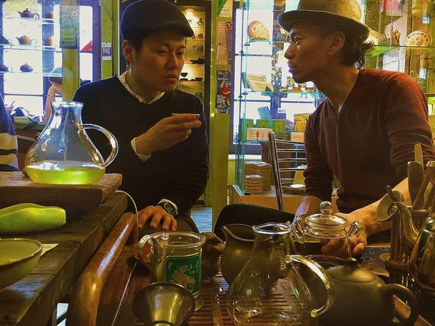

На Тверской
Тверская ул., 6, стр. 1
Ежедневно 12:00–00:00
Для брони столика звоните в конкретную чайную. Запись на дегустацию ведёт организатор цикла.
Тверская ул., 6, стр. 1
Ежедневно 12:00–00:00

ул. Покровка, 27, стр. 1
Ежедневно 11:00–00:00
До визита согласуйте встречу с организатором. Для активации билета звоните или пишите: +7 903 010-80-30 или Telegram чайного шефа.
Форма подготовит текст для Telegram. Вы сами отправите его чайному шефу. Подтверждение места придёт от чайной.